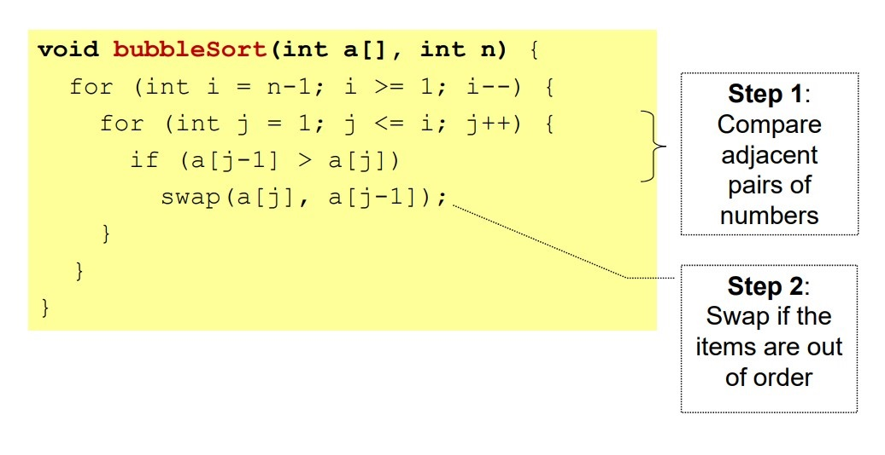

Sorting - Bringing Order to the World
Sushavan KarmakarSorting is a technique to rearrange the elements of a list in ascending or descending order, which can be numerical, lexicographical, or any user-defined order.
Why Study Sorting?
- When an input is sorted, many problems become easy (e.g. searching, min, max, k-th smallest)
- Sorting has a variety of interesting algorithmic solutions that embody many ideas
- Comparison vs non-comparison based
- Iterative
- Recursive
- Divide-and-conquer
- Best/worst/average-case bounds
Applications of Sorting
- Uniqueness testing
- Deleting duplicates
- Frequency counting
- Reconstructing the original order
- Finding a target pair x, y such that x+y = z
- Efficient searching
-------------------------------------------------------------------
Bubble Sort
Bubble Sort is the simplest sorting algorithm that works by repeatedly swapping the adjacent elements if they are in the wrong order. This algorithm is not suitable for large data sets as its average and worst-case time complexity is quite high.
How does Bubble Sort Work?
Given an array of n items
- Compare pair of adjacent items
- Swap if the items are out of order
- Repeat until the end of array
- The largest item will be at the last position
- Reduce n by 1 and go to Step 1


Worst-case
- Input is in descending order
- Running time remains the same: O(n^2)
Best-case
- Input is already in ascending order
- Running time: O(n)
-------------------------------------------------------------------
Selection Sort
The selection sort algorithm sorts an array by repeatedly finding the minimum element (considering ascending order) from the unsorted part and putting it at the beginning.
The algorithm maintains two subarrays in a given array.
- The subarray which already sorted.
- The remaining subarray was unsorted.
How does Selection Sort Work?
Given an array of n items
- Find the largest item x, in the range of [0…n−1]
- Swap x with the (n−1)th item
- Reduce n by 1 and go to Step 1

Worst-case
- Input is in descending order
- Running time remains the same: O(n^2)
Best-case
- Input is already in ascending order
- Running time: O(n^2)
-------------------------------------------------------------------
Insertion Sort
The selection sort algorithm sorts an array by repeatedly finding the minimum element (considering ascending order) from the unsorted part and putting it at the beginning.
The algorithm maintains two subarrays in a given array.
- The subarray which already sorted.
- The remaining subarray was unsorted.
How does Selection Sort Work?
Given an array of n items
- Find the largest item x, in the range of [0…n−1]
- Swap x with the (n−1)th item
- Reduce n by 1 and go to Step 1

Worst-case
- Input is in descending order
- Running time remains the same: O(n^2)
Best-case
- Input is already in ascending order
- Running time: O(n)
-------------------------------------------------------------------
Merge Sort
The Merge Sort algorithm is a sorting algorithm that is based on the Divide and Conquer paradigm. In this algorithm, the array is initially divided into two equal halves and then they are combined in a sorted manner.
Worst-case
- Input is in descending order
- Running time remains the same: O(n^2)
Best-case
- Input is already in ascending order
- Running time: O(n)